Surface finish& surface integrity
Surface texture · roughness parameters · theoretical roughness · surface integrity · machinability
A surface profile is what a stylus traces. Its heights above and below the mean line give the roughness parameters; what lies beneath the surface decides the rest of its integrity.
Four parts, from what you can see to what lies beneath.
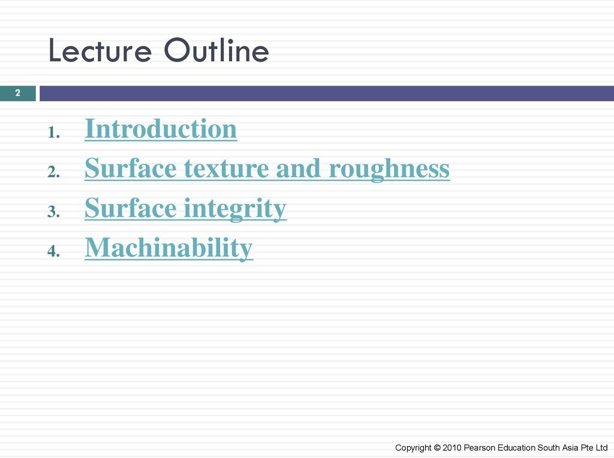
Surface integrity has two aspects: what the surface looks like, and what lies beneath it.
A surface can be defined as a border between a machined workpiece and its environment. The term surface integrity describes the state and attributes of a machined surface and its relationship to functional performance.
Surface integrity is commonly defined as "the topographical, mechanical, chemical and metallurgical state of a machined surface and its relationship to functional performance".
Performance characteristics usually sensitive to surface integrity: fatigue strength, fracture strength, corrosion rate, tribological behaviour (friction, wear and lubrication), dimensional accuracy.
Science asks what a surface is. Engineering decides what it should be.
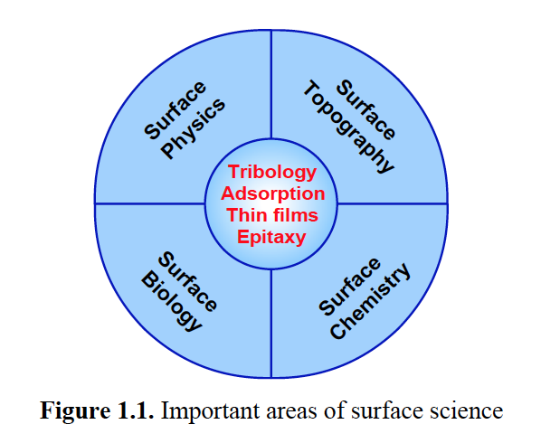
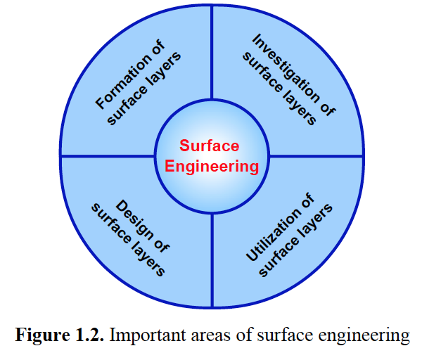
Surface science links physics, chemistry, biology and topography through tribology, adsorption, thin films and epitaxy. Surface engineering forms, investigates, designs and uses surface layers for a purpose.
Ten target properties of surface-engineered components. Click one for an example.
At 12 m/min the turned surface is torn; at 250 m/min the feed marks are clean.
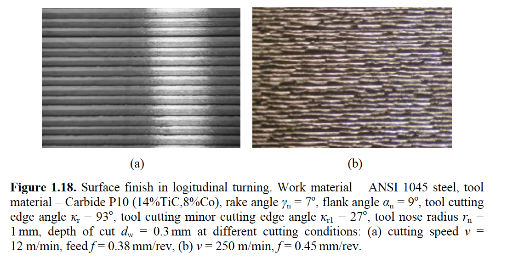
- Work: ANSI 1045 steel. Tool: carbide P10, nose radius about 1 mm, depth of cut 0.3 mm.
- (a) v = 12 m/min, f = 0.38 mm/rev. (b) v = 250 m/min, f = 0.45 mm/rev.
- Surface (b) has the larger feed yet the more regular texture: at low speed, built-up edge and tearing dominate over the geometry of the feed marks.
Built-up edge worsened roughness at specific feed, nose-radius and speed levels; the best roughness came from low feed, large nose radius and high cutting speed.
Masounave et al. (1997)The geometric model predicts the high-speed result well and the low-speed result badly.
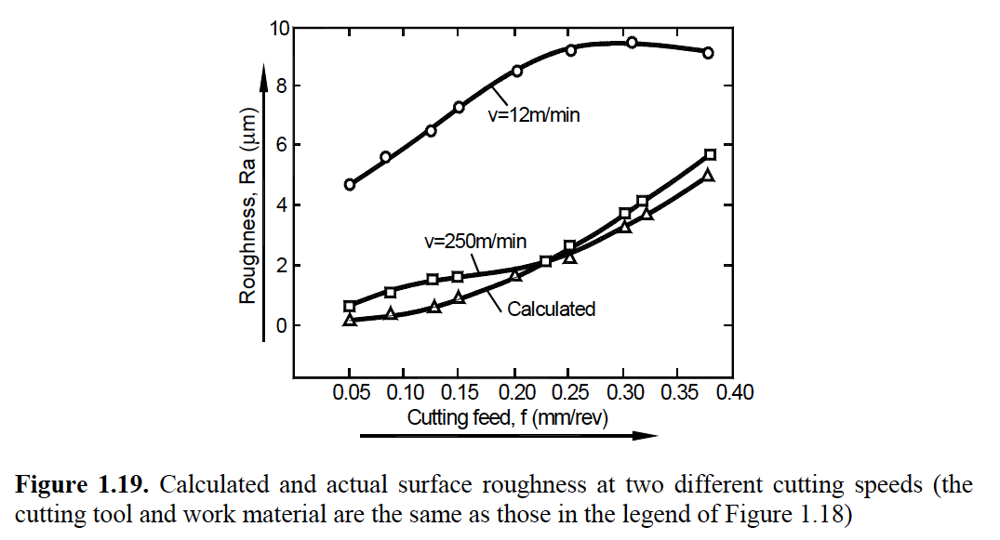
Check the "Calculated" curve yourself
With r = 1 mm the calculated values follow the lower curve in the figure. The measured 250 m/min curve sits close to it; the 12 m/min curve is several times higher at small feeds, because the model ignores cutting speed.
Each process covers a band of Ra. Convert a drawing value, then find it on the chart.
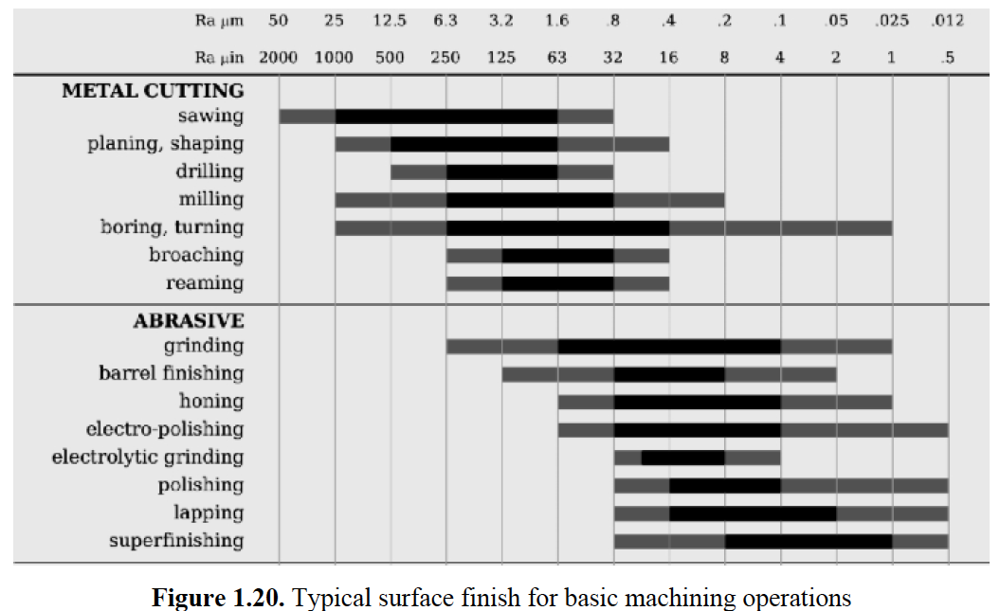
Ra converter
ISO 1302 N-grades double in Ra at each step, from N1 = 0.025 µm to N12 = 50 µm. The chart's top two rows give the same series in µm and µin.
The surface is the first contact with an object, and where defects live.
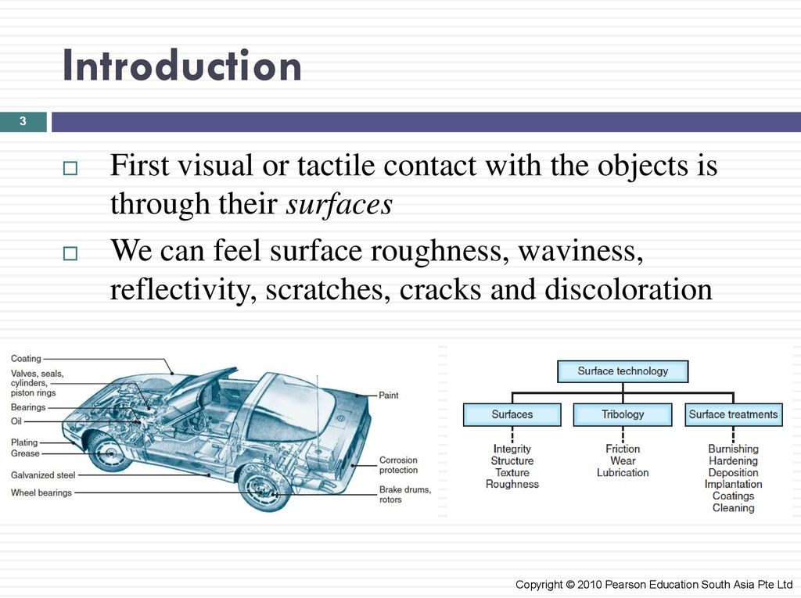
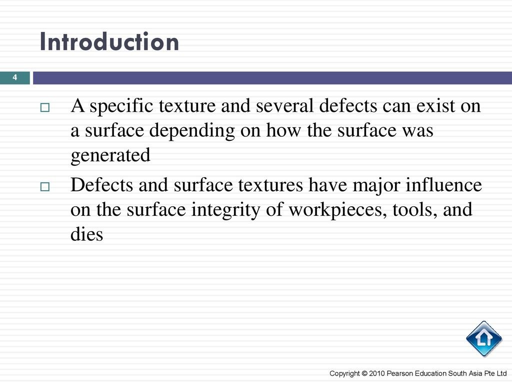
A measured profile is form, waviness and roughness added together. Separate them.
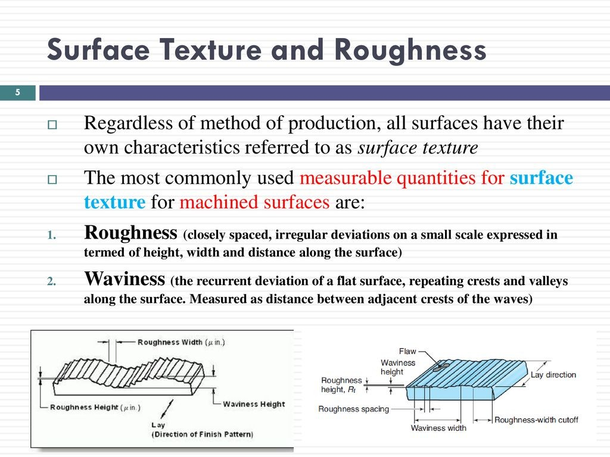
Ra is the average distance of the profile from its mean line.
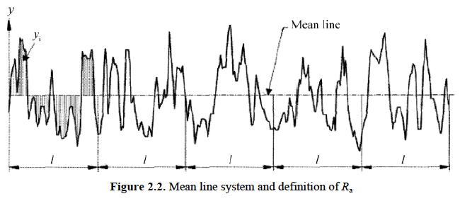
The arithmetic average value of the filtered roughness profile determined from deviations about the centre line within the evaluation length; the most popular parameter for machining process and product quality control.
Easy to define and to measure, even on the simplest profilometers. A general description of surface amplitude, established in almost every national standard.
Lacks physical significance, insensitive to small variations, gives no in-length information, and makes no distinction between peaks and valleys.
Rt catches the single worst scratch. Rz averages it out.
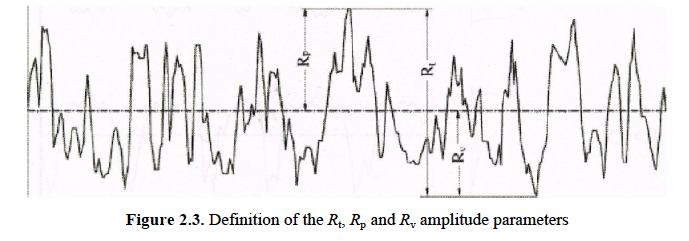
The maximum peak-to-valley height of the filtered profile over the evaluation length. Very sensitive to large deviations from the mean line and scratches. Very commonly used along with Ra as a general indicator.
Rz · average peak to valley heightSmooths large deviations that are not representative of the surface finish compared with Rt.
ISO 4287 defines Rz within each sampling length; the profile lab (slide 14) averages it over five sampling lengths.
Peaks and valleys do different jobs, so they get their own parameters.
RMS average of the profile ordinates; more sensitive to peaks and valleys than Ra.
Rp · highest single peakHeight of the highest peak above the centre line; sensitive to material removal from peaks.
Rpm · mean levelling depthCharacterises bearing and sliding surfaces, and substrates to be coated.
Rv · deepest valleyDepth of the deepest valley below the centre line; an indicator of oil retention or of mechanical behaviour under high stress.
Shape the profile, then see which parameters notice.
- Profiles with similar Ra can have different Rsk and Rku; those two helped explain dry-sliding wear of machined steel where Ra, Rq and Rz could not. (Garagnani et al., 2024)
- Machined surfaces should be described by several indicators, such as Ra, Rz, Rp, Rv, Rsk and Rku. (Karkalos et al., 2024)
Type the digitised readings and compute both.
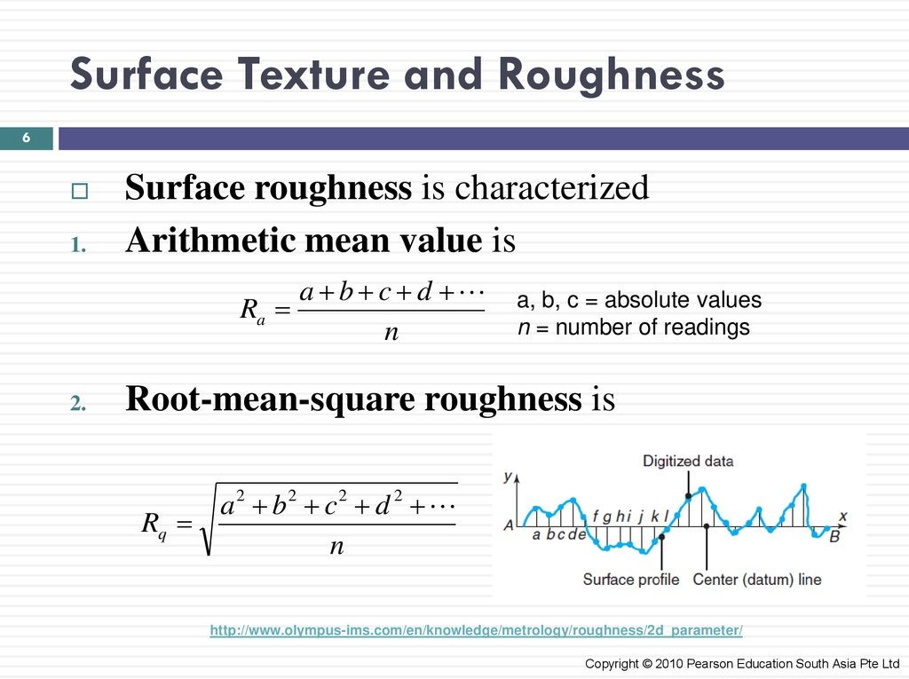
A diamond stylus traces the surface; the trace looks different for every process.
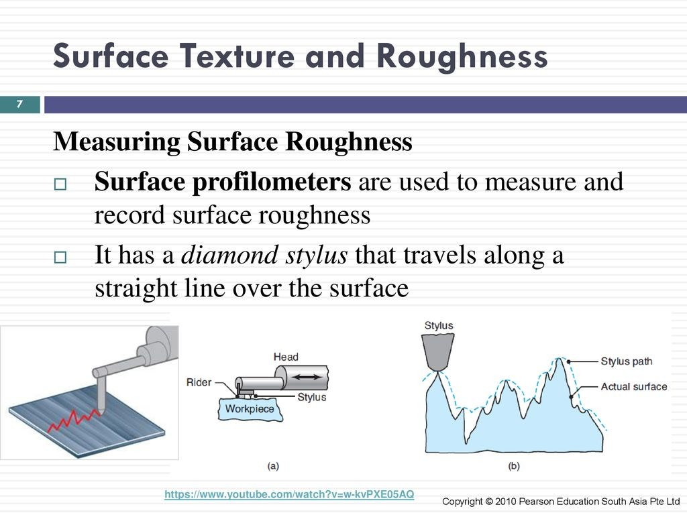
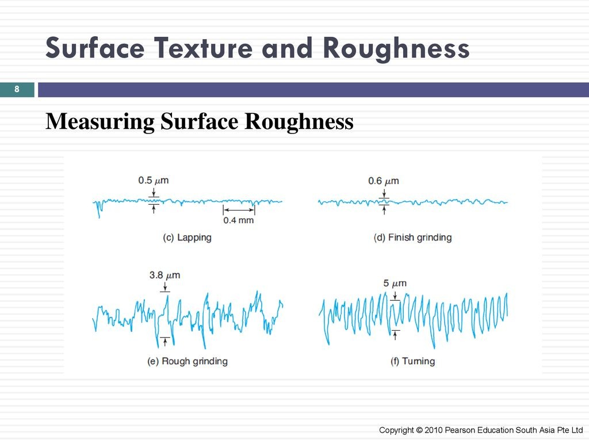
Note the vertical scales on the right-hand traces: lapping gives about 0.5 µm, turning about 5 µm. A stylus cannot enter a valley narrower than its own tip, so very fine valleys are read too shallow.
Height distribution and spacing describe what Ra leaves out.
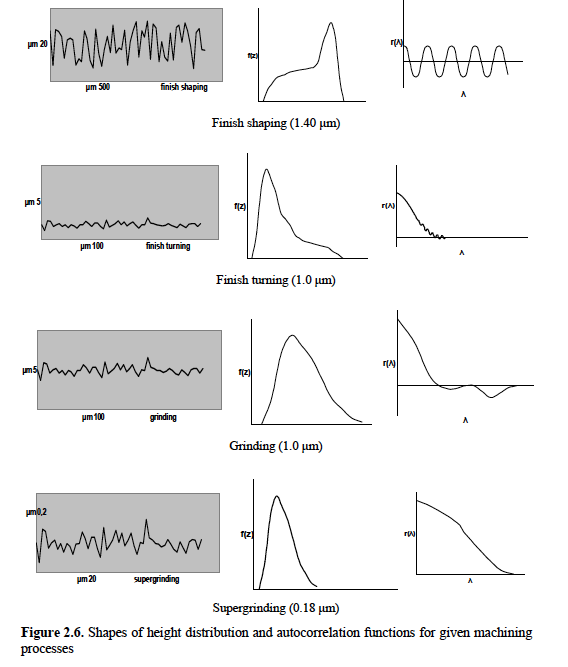
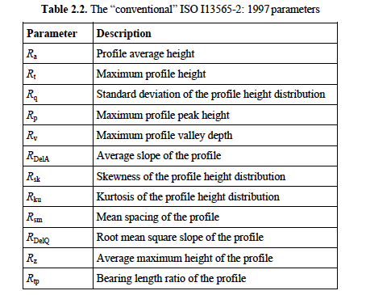
Asymmetry of the height distribution. Negative: plateaus with deep valleys (honed liners hold oil). Positive: sharp peaks (wear quickly in sliding).
Sharpness of the distribution: 3 for a Gaussian surface; above 3 means spiky peaks or valleys.
Try both on slide 14: move the peaks ↔ valleys slider and watch Rsk change sign while Ra hardly moves.
Name the lay symbol for each surface. The line under each pattern is the drawing view's edge.
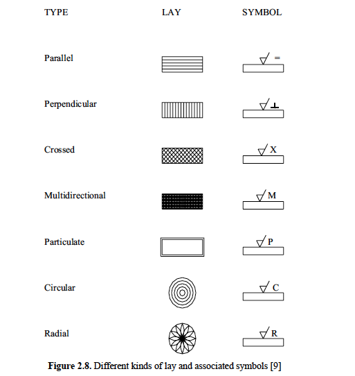
The tool's shape is copied into the surface once per feed.
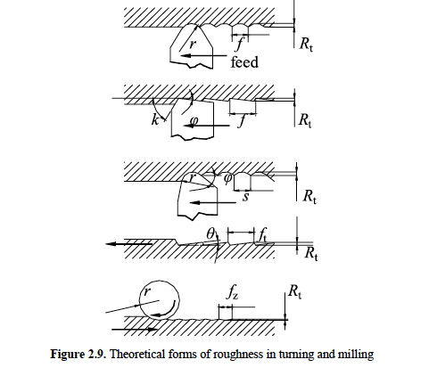
- Sharp tool: triangular feed marks set by the two edge angles; Rt grows in direct proportion to feed.
- Rounded nose: circular arcs of radius r; Rt grows with the square of feed and falls with nose radius.
- Milling: the same idea with feed per tooth and the cutter's radius or cut-off angle.
- These are lower bounds. Built-up edge, vibration, tool wear and side flow add to them.
Rounded nose or sharp tool: compute Rt and Ra and see the profile.
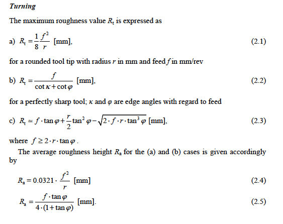
In milling, feed per tooth plays the part of feed.
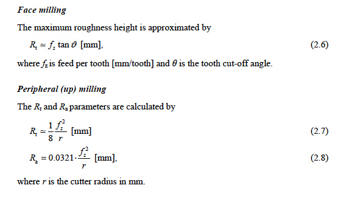
Face milling · Rt = fz tan θ
Peripheral (up) milling · Rt = f²/8r, Ra = 0.0321 f²/r
r is the cutter radius, so peripheral-milling marks are very shallow; in practice runout of individual teeth often dominates.
Turning: Ra rises with feed and peaks at moderate speed. EDM: Ra rises with spark energy.
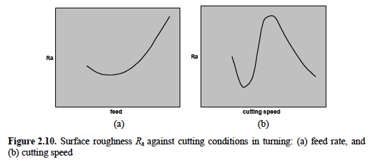
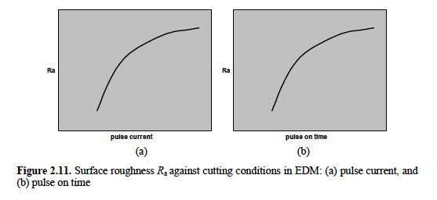
The peak in Fig. 2.10(b) sits in the speed range where built-up edge is most active: below it the edge is cold and stable, above it the chip–tool interface is too hot for a stable built-up edge.
Switch between feed, speed and depth of cut. Which one changes the trace most?
All three: Vc, f and DOC as stated in each caption. The vertical scale is the same in every trace, so trace height compares directly.
Finish describes geometry; integrity describes the material. Built-up edge damages both.
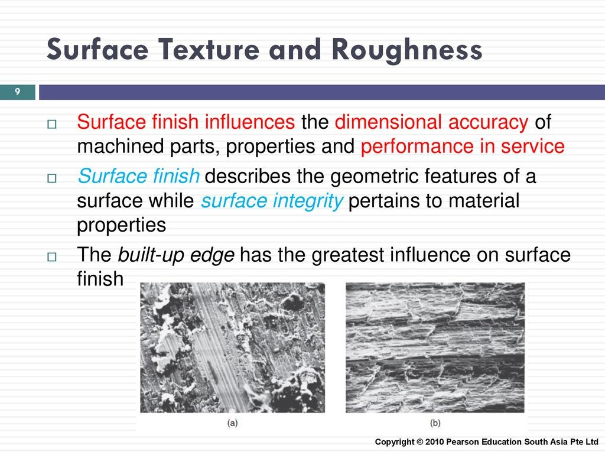
- Built-up edge fragments smear onto the machined surface and the effective tool geometry keeps changing.
- Raising cutting speed, using a sharper positive rake, a smoother tool coating or a cutting fluid all reduce it.
- In low-carbon steels, built-up edge disappeared as speed rose to 65–80 m/min and roughness improved. (Shather, 2009)
The required finish is generated in the final passes of the tool.
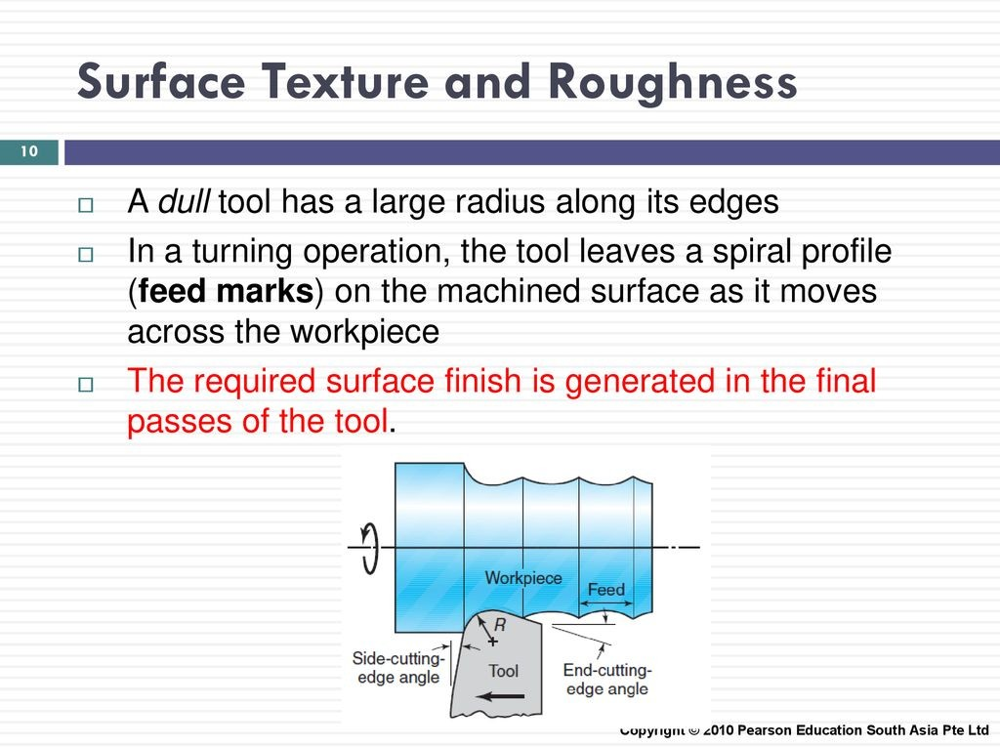
- A dull tool has a large radius along its edges: it rubs and ploughs instead of cutting cleanly.
- The spiral feed marks are the geometric roughness of slide 20; their spacing equals the feed per revolution.
- So plan the process the way slide 31 suggests: rough with large feed and depth, then finish with low feed, small depth and moderate speed.
A set of superficial and in-depth properties that decide how a surface performs in service.
Surface integrity in the engineering sense can be defined as a set of various properties (both superficial and in-depth) of an engineering surface that affect the performance of this surface in service.
These properties primarily include surface finish, texture and profile; fatigue, corrosion and wear resistance; adhesion and diffusion properties.
When applicable, also: optical properties, absorptivity, adsorption, bonding capability, emissivity, flatness, frictional resistance, score strength, stain resistance, surface temperature, surface tension, thermal emissivity, washability, wettability, biological and chemical properties.
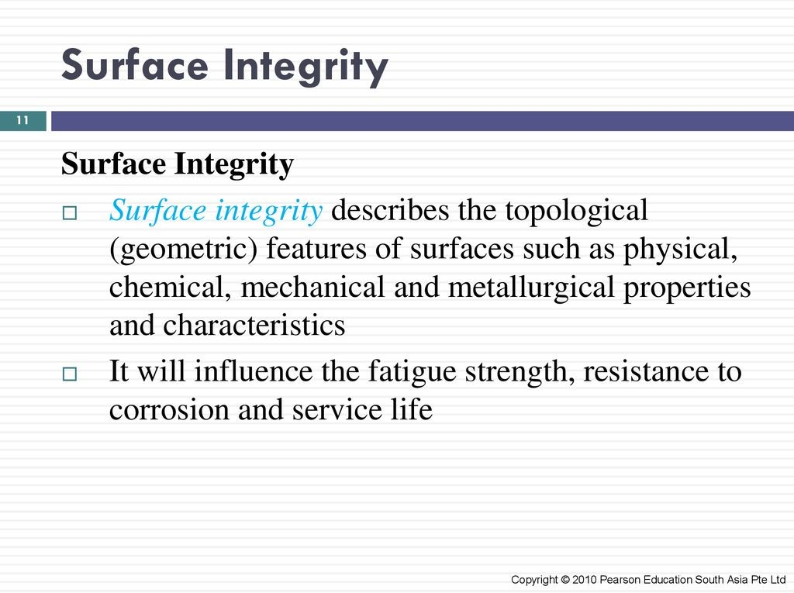
Start from the working conditions, not from the machine.
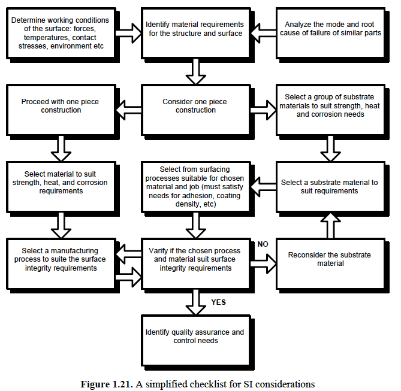
- Define working conditions and how similar parts fail.Forces, temperatures, contact stresses, environment.
- Choose one-piece or a substrate with a surface layer.
- Select material or surfacing process to meet strength, heat and corrosion needs.
- Select a manufacturing process that meets the surface requirements, then verify.If verification fails, reconsider the substrate and loop back.
- Define quality assurance and control.
Click a layer label on the original figure.
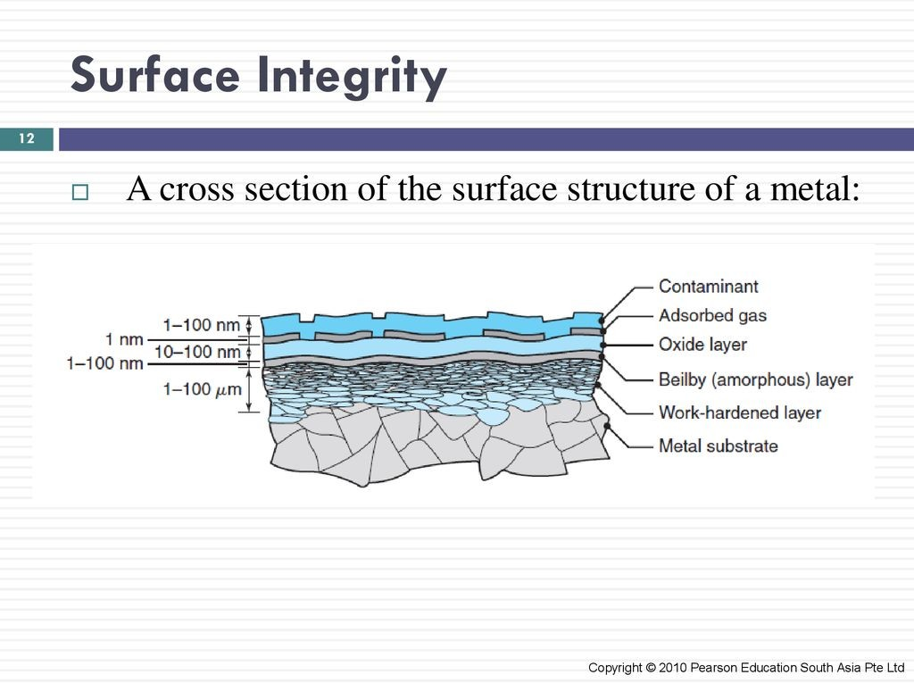
Page through the original slides, then explore each defect.
Heat pulls the surface into tension; mechanical working pushes it into compression.
Residual stress against depth
schematicResidual stress is one of the most influential subsurface properties for fatigue life and fracture behaviour.
Denkena et al. (2013)In grinding, mechanical deformation tends to leave compressive surface stress and thermal deformation tensile stress; high temperature forms a hard, brittle white layer.
Zhang et al. (2025)Roughness, residual stress and white layer are the most common surface-integrity factors; low rake angle and edge radius promote compressive residual stress.
Del Prete et al. (2014)A semi-finished liner drawing specifies surfaces, not only sizes.
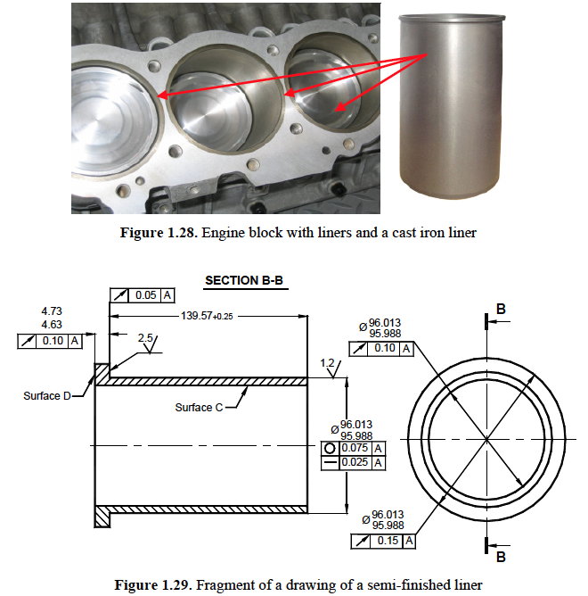
- The liner's bore runs against piston rings: it needs oil-retaining valleys (negative Rsk) and a hard, crack-free subsurface.
- The drawing gives tight diameters, runout and surface symbols for surfaces C and D, with allowance for the finishing operation.
- Discussion: which parameters from slides 11–17 would you add to the finished-bore drawing, and why is Ra alone not enough?
Four factors define machinability; surface finish and integrity come first.
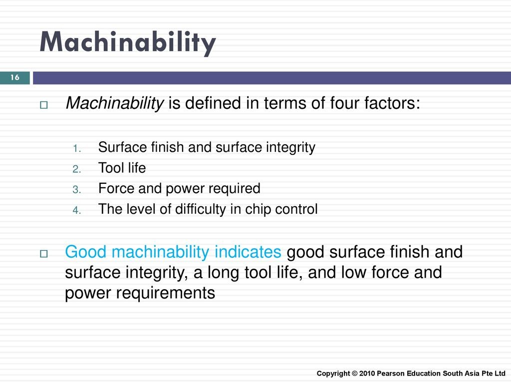
Good machinability means good surface finish and integrity, long tool life, and low force and power requirements.
Pick a material to see why it is easy or difficult to machine.
Six questions. Pick an answer to see the reasoning.
References
- Del Prete, A., Franchi, R., Mariano, E., et al. (2014). Nickel superalloy components surface integrity control through numerical optimization. Key Engineering Materials, 611–612, 1396–1403. doi:10.4028/…/KEM.611-612.1396
- Denkena, B., Köhler, J., Breidenstein, B., et al. (2013). Surface integrity – an inherent load sensor. Advanced Materials Research, 797, 679–684. doi:10.4028/…/AMR.797.679
- Garagnani, G. L., Baroni, E., Fortini, A., et al. (2024). Influence of the machining process on the wear properties of self-mated structural steel in dry sliding conditions. Metals, 14(6), 679. doi:10.3390/met14060679
- Karkalos, N. E., Muthuramalingam, T., Karmiris-Obratański, P., et al. (2024). Evaluation of the feasibility of the prediction of the surface morphologies of AWJ-milled pockets by statistical methods based on multiple roughness indicators. Surfaces, 7(2), 340–357. doi:10.3390/surfaces7020021
- Masounave, J., Youssef, Y. A., Beauchamp, Y., et al. (1997). An experimental design for surface roughness and built-up edge formation in lathe dry turning. International Journal of Quality Science, 2(3), 167–180. doi:10.1108/13598539710170803
- Shather, S. K. (2009). A studying the effect of chemical composition of workpiece on built up edge formation and surface roughness. Engineering and Technology Journal, 27(10), 2061–2071. doi:10.30684/etj.27.10.12
- Zhang, T., Wang, Q., Wang, N., et al. (2025). Surface integrity in the grinding of hardened AISI D2 steel. Materials, 18(4), 814. doi:10.3390/ma18040814
- Figures are reproduced unchanged from the original lecture slides: Pearson Education South Asia (2010) slides as credited on each, and the surface-integrity text figures numbered 1.x and 2.x. Background standards: ISO 4287, ISO 1302.